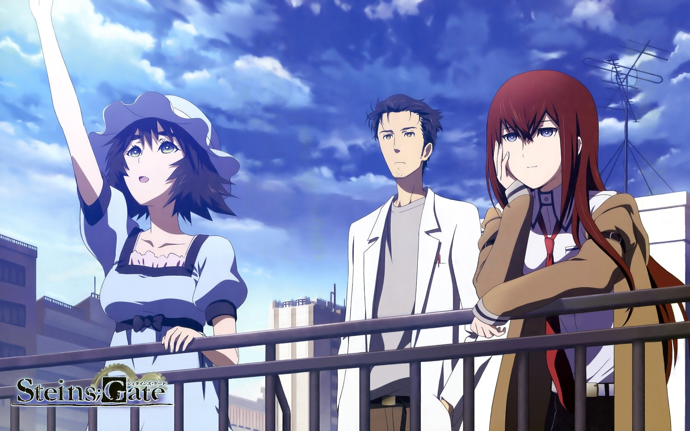
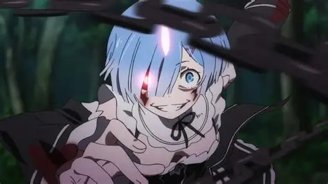
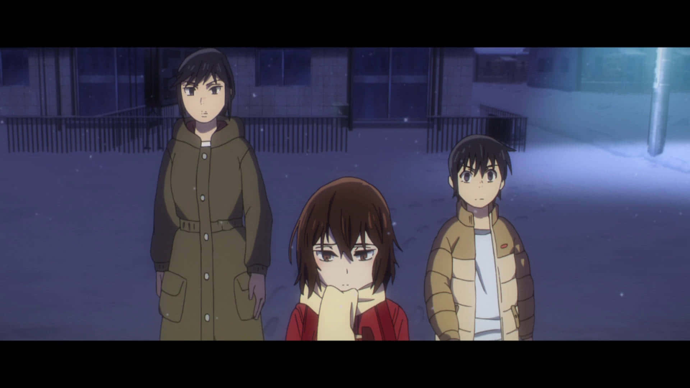
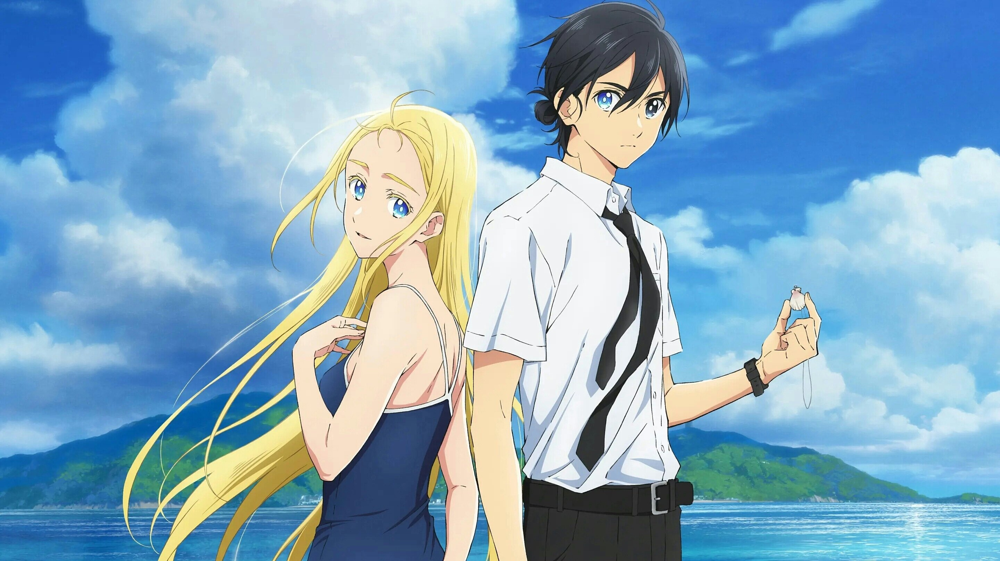
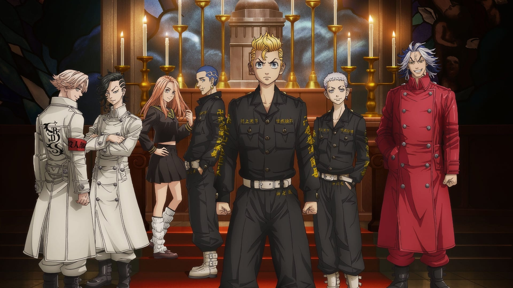
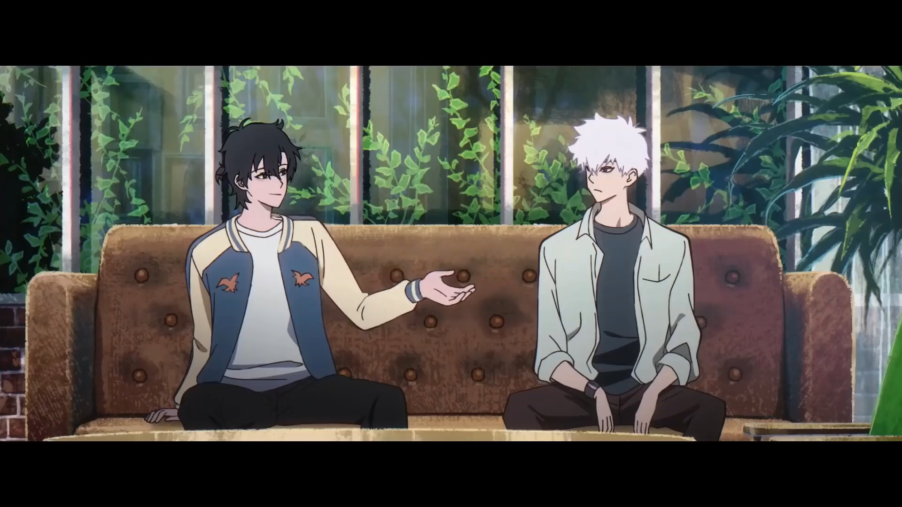
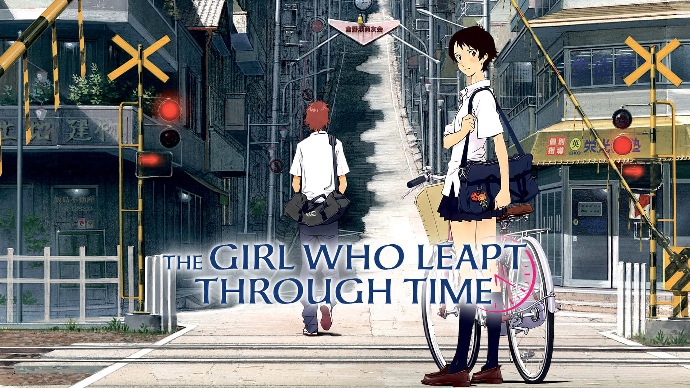
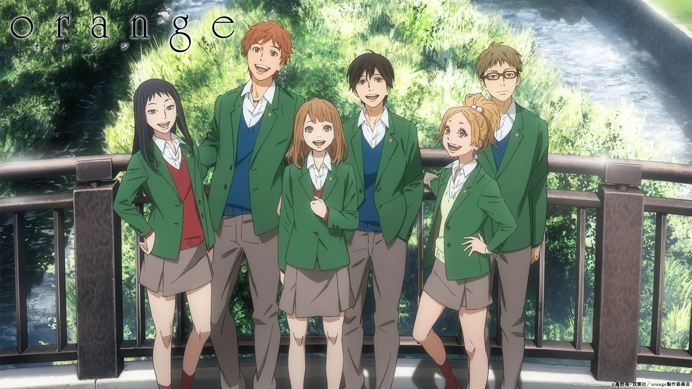
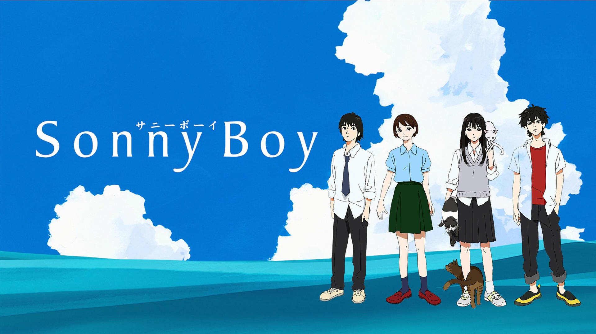

SMASH Senpai
Top 10 Time Travel Anime That Will Break Your Brain & Heart
Time travel isn’t about flashy powers or cool science alone. It’s about consequences. One decision can destroy a future, erase a memory, or trap someone in an endless loop of regret.
These anime explore what happens when people are given the power to change time — and the emotional price that comes with it. From painful resets to impossible choices, every timeline carries a cost.
You’ll find stories about repeating the same tragedy, saving someone who was never meant to survive, and watching futures collapse because of a single mistake.
Some of these series will challenge your logic. Others will hit you emotionally when you least expect it. And a few will do both at the same time.
These are the Top 10 Time Travel Anime that don’t just bend reality — they stay with you long after the final episode ends.
Sponsored
#1 Steins;Gate
Steins;Gate is widely regarded as one of the greatest time travel anime ever created. What begins as a seemingly lighthearted story about eccentric characters and harmless experiments slowly transforms into a deeply emotional and psychologically intense journey.
The story follows Rintarou Okabe, a self-proclaimed mad scientist who accidentally discovers a way to send messages into the past. At first, the power feels exciting and almost playful, but every small change begins to create devastating consequences across different timelines.
What makes Steins;Gate special is its careful handling of cause and effect. Every decision matters. Every message sent creates ripples that cannot be undone without sacrifice. The anime forces its protagonist to face the painful reality that saving one person often means losing another.
As the story progresses, the tone grows darker and heavier. Okabe’s descent from overconfident eccentric to emotionally broken feels raw and real. The repeated attempts to fix the timeline create a sense of desperation that few anime manage to replicate this effectively.
- Episode count: 24
- Genre: Sci-Fi, Time Travel, Psychological
- Best for: Emotional storytelling, butterfly effect themes
- Why it works: Time travel with real consequences

play anime smash or pass here (not sponsored)
SMASH SENPAI – Smash or Pass#2 Re:Zero − Starting Life in Another World
Re:Zero takes the concept of time travel and turns it into something brutal, painful, and psychologically exhausting. Instead of becoming a source of power, time becomes a curse that traps the protagonist in endless suffering.
Subaru Natsuki discovers that every time he dies, he is sent back to a fixed point in the past. Unlike typical overpowered protagonists, Subaru gains no strength, no skills, and no control over when the reset happens. All he keeps is memory — and trauma.
Each death is graphic, terrifying, and emotionally damaging. Watching the same people die again and again slowly breaks Subaru’s mental state. The anime doesn’t glorify time travel; it shows how cruel it can be to relive failure without the ability to escape it.
What makes Re:Zero stand out is its honesty. Subaru is flawed, selfish, and emotionally fragile. His growth doesn’t come from power-ups but from confronting his fear, guilt, and desperation. Time travel becomes a test of mental endurance rather than strength.
- Episode count: 50+
- Genre: Fantasy, Time Loop, Psychological
- Best for: Emotional pain, character breakdowns
- Why it works: Time travel as psychological torture
Sponsored
#3 Erased
Erased approaches time travel from a deeply emotional and grounded perspective. Instead of complex science or flashy mechanics, the story focuses on regret, childhood trauma, and the desire to prevent tragedies before they happen.
The protagonist, Satoru Fujinuma, has an ability that sends him back in time moments before a disaster occurs. When his mother is murdered, he is sent 18 years into the past — back to his childhood — with a chance to stop a series of kidnappings that shaped his life.
Unlike many time travel anime, Erased is intimate and personal. The tension doesn’t come from paradoxes, but from fear of failing again. Satoru must think like an adult while trapped in the body of a child, carrying responsibility far beyond his age.
The anime explores themes of abuse, loneliness, and silent suffering. Every interaction feels meaningful, and every mistake threatens to destroy the future once more. Erased is heartbreaking because it feels painfully real.
- Episode count: 12
- Genre: Mystery, Time Travel, Psychological
- Best for: Emotional storytelling, suspense
- Why it works: Personal stakes and grounded time travel
#4 Summertime Rendering
Summertime Rendering takes time travel and blends it with mystery, horror, and relentless tension. Set on a seemingly peaceful island, the anime slowly reveals a nightmare where death is frequent and time itself becomes the only weapon.
Shinpei Ajiro returns to his hometown after the death of a close friend, only to discover that something deeply unnatural is happening. After being brutally killed, he realizes he can rewind time — but only to a fixed point, and only a limited number of times.
What makes Summertime Rendering stand out is its intelligence. The enemies learn. They adapt. Every loop becomes more dangerous than the last. Time travel is not a guarantee of safety — each reset pushes Shinpei closer to permanent failure.
The anime balances action with strategy, forcing the protagonist to carefully plan every move while racing against a constantly shrinking window of opportunity. Mistakes are punished instantly, often with horrifying consequences.
Summertime Rendering is one of the most intense time travel anime ever made. It proves that looping time doesn’t make survival easier — it only raises the stakes.
- Episode count: 25
- Genre: Mystery, Thriller, Supernatural
- Best for: High tension, smart time-loop battles
- Why it works: Enemies evolve across timelines
Sponsored
#5 Tokyo Revengers
Tokyo Revengers uses time travel as a tool for emotional regret rather than power. The story follows Takemichi Hanagaki, a washed-out adult who discovers he can travel back to his middle school days — a chance to fix a future filled with loss.
Unlike most time travel protagonists, Takemichi is weak, scared, and unprepared. He can’t fight well. He isn’t smart. His only strength is persistence and emotional resolve. Every jump to the past places him directly in the middle of violent gang conflicts.
The anime’s strength lies in its emotional stakes. Each timeline shows a different tragic outcome for the same group of people. Takemichi isn’t trying to save the world — he’s trying to save his friends from becoming monsters or dying young.
Time travel here feels cruel. Changing one event often creates unexpected disasters elsewhere. Takemichi must relive failure repeatedly, carrying emotional scars that no one else remembers.
Tokyo Revengers works because it treats time travel as a second chance — not for greatness, but for redemption.
- Episode count: 50+
- Genre: Drama, Action, Time Travel
- Best for: Emotional storytelling and character bonds
- Why it works: Time travel driven by regret
#6 Link Click
Link Click delivers one of the most emotionally devastating takes on time travel. Instead of machines or portals, the ability to enter the past comes through photographs — and every jump carries irreversible consequences.
Cheng Xiaoshi and Lu Guang run a small shop that allows them to relive moments captured in photos. One enters the body of the person who took the picture, while the other guides him, enforcing a strict rule: do not change the past.
Of course, that rule is constantly tested. Every episode explores deeply human regrets — missed opportunities, unspoken feelings, and moments that could have changed everything. Time travel becomes a temptation rather than a solution.
What makes Link Click exceptional is its emotional impact. Even small changes can destroy lives. The anime repeatedly shows that good intentions are not enough to prevent disastrous outcomes.
Link Click stands out by focusing on ordinary people. It proves that time travel doesn’t need grand wars or villains — sometimes the most painful consequences come from love and loss.
- Episode count: 11+
- Genre: Drama, Supernatural, Time Travel
- Best for: Emotional damage and moral dilemmas
- Why it works: Small changes, massive consequences
Sponsored
#7 Vivy: Fluorite Eye’s Song

Vivy: Fluorite Eye’s Song is a rare blend of time travel, science fiction, and emotional storytelling. The anime follows Vivy, an AI singer tasked with preventing a future where artificial intelligence wipes out humanity.
The time travel aspect unfolds across multiple historical points, spanning a hundred years of human and AI evolution. Vivy is forced to interfere with key events that slowly shape a catastrophic future, even when the consequences of intervention are unclear.
What makes Vivy special is its emotional depth. Vivy isn’t human, yet she struggles more than most human protagonists. Every mission forces her to question identity, purpose, and what it truly means to protect others.
The anime explores how even small changes can ripple across decades. Preventing one tragedy may unintentionally cause another, making every decision feel morally heavy.
Vivy proves that time travel doesn’t always involve fixing mistakes — sometimes it’s about choosing which future deserves to exist.
- Episode count: 13
- Genre: Sci-Fi, Time Travel, Drama
- Best for: Emotional sci-fi and philosophical themes
- Why it works: Long-term consequences across timelines
#8 The Girl Who Leapt Through Time
The Girl Who Leapt Through Time presents one of the most grounded and realistic portrayals of time travel in anime. Rather than saving the world, the story focuses on small, personal regrets and everyday choices.
Makoto Konno gains the ability to leap back in time and initially uses it for trivial reasons — avoiding embarrassment, fixing minor mistakes, and preserving moments she doesn’t want to end.
Over time, the anime reveals the cruel truth about time manipulation. Each leap creates unseen consequences for others. Fixing her own happiness often results in pain for people she cares about.
The emotional weight of the story builds quietly. There are no villains, no epic battles — just the slow realization that time cannot be controlled without loss.
The Girl Who Leapt Through Time is powerful because it feels real. It reminds viewers that growing up means accepting irreversible choices.
- Format: Movie
- Genre: Romance, Drama, Time Travel
- Best for: Emotional storytelling and reflection
- Why it works: Simple concept with deep impact
#9 Orange
Orange uses time travel as a desperate attempt to save a life. The story begins when Naho Takamiya receives letters from her future self, warning her about regrets that will lead to tragedy.
The letters focus on Kakeru, a transfer student whose internal struggles are invisible to those around him. Unlike most time travel stories, the goal isn’t changing major events — it’s preventing emotional isolation.
Orange handles sensitive themes with care. Depression, guilt, and regret are portrayed honestly, showing how easily pain can be overlooked by friends and loved ones.
Every attempt to change the future feels fragile. The characters constantly fear that one wrong move could lock tragedy in place. Time travel here feels like a fragile hope rather than a solution.
Orange stands out by proving that saving someone often starts with listening and understanding.
- Episode count: 13
- Genre: Drama, Romance, Time Travel
- Best for: Emotional and heartfelt storytelling
- Why it works: Time travel used to save a single life
#10 Sonny Boy
Sonny Boy is the most unconventional entry on this list. It approaches time travel and alternate realities through abstraction, symbolism, and philosophical storytelling rather than clear rules.
A group of students suddenly find themselves drifting through alternate worlds where time flows differently — or sometimes not at all. Each world represents isolation, stagnation, or emotional escape.
Time in Sonny Boy is unstable. Characters age differently, realities collapse, and meaning is often unclear. The anime intentionally avoids explanations, forcing viewers to interpret events.
What makes Sonny Boy powerful is its atmosphere. The emptiness of endless worlds reflects adolescence, uncertainty, and the fear of moving forward.
Sonny Boy isn’t for everyone, but for those willing to engage with it, it offers a haunting and unforgettable experience.
- Episode count: 12
- Genre: Psychological, Sci-Fi, Experimental
- Best for: Deep thinkers and abstract storytelling
- Why it works: Time as a metaphor for growth
Play Smash or Pass on SMASH Senpai.
 PLAY SMASH OR PASS
PLAY SMASH OR PASS